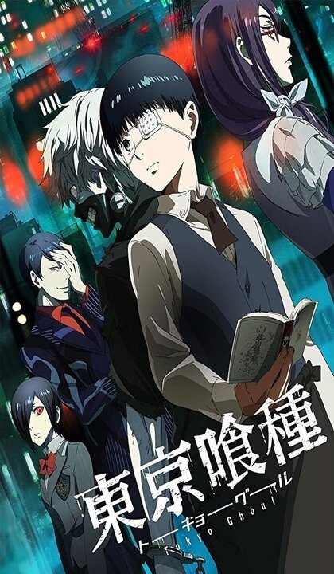
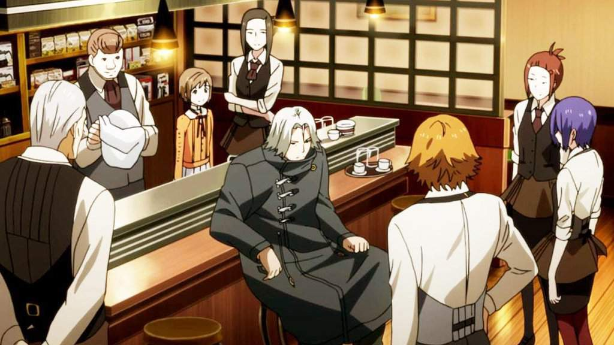
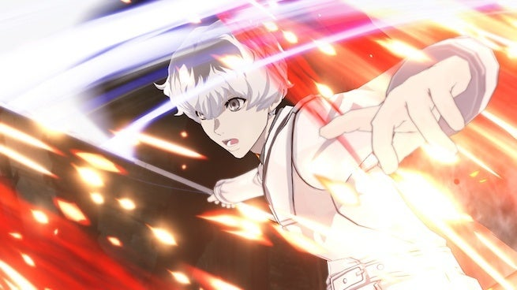

Tokyo ghoul

Tokyo Ghoul is a dark fantasy manga by Sui Ishida , released between September 2011 and September 2014 in Shueisha's Weekly Young Jump magazine , the collected chapters were published in 14 volumes. A sequel titled "Tokyo Ghoul: re" was serialized in Weekly Young Jump between October 2014 and July 2018 . and was collected in 16 volumes.
A 12-episode anime television series adaptation by Studio Pierrot aired on Tokyo MX between July and September 2014. The second 12-episode season of Tokyo Ghoul √A (pronounced Tokyo Ghoul Root A ) aired from January to March 2015. In July 2017, a live -action film based on the manga was released in Japan. An anime adaptation based on the manga sequel Tokyo Ghoul: re also ran for two seasons; the first from April to June 2018, and the second from October to December 2018.
A series of brutal murders take place in Tokyo. There is little to no evidence at the crime scenes, but everyone is convinced that human-eating ghouls are the culprits, although no one really knows who they are or what they look like. These events are of little concern to Ken Kaneki , but along with his best friend Hideyoshi Nagachika , he believes that ghouls have not yet been found just because they cleverly disguise themselves as their victims...
Kenloves books and often reads them in cafes. Once he was attracted by a girl reading a book in this very cafe, moreover, by the same author as the book in the hands of the protagonist. However, why does such a rare chance to start a relationship with a beautiful girl end in failure? And why was she a ghoul? What can happen to a first-year student of the Faculty of Philology? Shock, unconsciousness, hospital, surgery, new stomach. This acquaintance changed his life: now he is not a man, but not a ghoul either. What decision will he make and what awaits him? Ken Kaneki , what will you become: hunter or prey?

